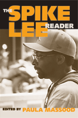

<body bgcolor="#FFFFFF" text="#000000" link="#0000FF" vlink="#CC0000" alink="#CC0000"><center><hr width="350" size="1" align="center" noshade>Looking at the films of the prolific, often controversial, and always provocative director<hr width="350" size="1" align="center" noshade><p><a href="https://cdcshoppingcart.uchicago.edu/Cart/ChicagoBook.aspx?ISBN=9781592134847&&PRESS=temple" target="_top">Buy this book!</a> | <a href="https://cdcshoppingcart.uchicago.edu/Cart/Cart.aspx?PRESS=temple" target="_top">View Cart</a> | <a href="https://cdcshoppingcart.uchicago.edu/Cart/Cart.aspx?PRESS=temple" target="_top">Check Out</a></p><p></p></center><!--none//--><h1>The Spike Lee Reader</h1>
<h3>edited by Paula J. Massood</h3>
<P>cloth 159213484X $79.50, Dec 07, <FONT COLOR=#990033>Out of Stock Unavailable</FONT>
<br>paper 1592134858 $29.95, Dec 07, <FONT COLOR=#990033>Available</FONT>
<BR> 304 pp
6x9
17&nbsp;halftones
</P><h3 align="center"><P><font color="#996633">Significant University Press Titles for Undergraduates,
2007-2008</font></P>
</H3>
<BLOCKQUOTE><I>"No filmmaker touches the nerves of Americans, black and white alike, as Spike Lee does. Throughout his career, he has been a necessary provocateur in our national conversation about race. These essays provide comprehensive analysis of his films and articulate why he is such a potent force in our cultural landscape"</i><br>&#151<b>Henry Louis Gates</b>, Alphonse Fletcher University Professor, Harvard University</I></BLOCKQUOTE>
<p>From his stunning debut, <i>She's Gotta Have It</i>, to his incendiary <i>Do the Right Thing</i>, through <i>Jungle Fever, Bamboozled</i>, and even <i>Inside Man</i>, Spike Lee has found loyal fans and fervid detractors, as well as critical praise, if not always box office success. Lee's films have sparked critical inquiries into the nature of genres, the role of the auteur, and question of whether there is, in fact, a black cinematic aesthetic. According to some critics, Lee's films challenge viewers to engage intellectually with a cinematic "text," to revel in and deconstruct the complexities of each film's polyphonic visual and aural fields.
<p>
Gathered in this anthology are critical writings on Spike Lee's films by leading scholars in the fields of Cinema Studies and African American Studies. In sixteen new and reprinted essays, the contributors to <i>The Spike Lee Reader</i> consider the nexus of race, gender, and sexuality in Lee's work, and in doing so encourage readers to further explore the cultural, social, and political implications of Lee's films as well as his entire body of work.
<p>
Contributors include: Christine Acham, Toni Cade Bambara, Mark D. Cunningham, Anna Everett, Daniel Flory, Krin Gabbard, David A. Gerstner, Ed Guerrero, Keith M. Harris, bell hooks, Wahneema Lubiano, James C. McKelly, Tavia Nyong'o, Beretta E. Smith-Shomade, Michele Wallace, S. Craig Watkins, and the editor.
<BR>&nbsp;<h2>Excerpt</h2><P>Excerpt available at <a href="http://www.temple.edu/tempress">www.temple.edu/tempress</a></p>
<BR>&nbsp;<h2>Reviews</h2>
<p><i>"This rich and timely anthology brings together classic and original essays on Spike Lee’s major films. These thought-provoking yet accessible pieces explore such topics as the significance of Lee’s aesthetic choices, his contributions to African American film history, his place in the American cinematic landscape, and his negotiations with ideologies of race, gender, sexuality and class. The contributors’ engagement with Lee’s </i>oeuvre<i> exemplifies the diverse responses his work has inspired for more than twenty years and will secure his place as one of the most influential cultural producers of our time."</i>
<br>&#151<b>Valerie Smith</b>, Director, Center for African American Studies and Woodrow Wilson Professor of Literature, Princeton University
<p><i>"Paula Massood has assembled an impressive array of critical prose on one of the last authentic voices in Hollywood, Spike Lee. The book puts Lee's </i>ouevre<i> in its proper social and cultural context, while underscoring his historical significance in a cinematic world where Black filmmakers have not always gotten their props."</i>
<br>&#151<b>Dr. Todd Boyd</b>, author and media commentator, is the Katherine and Frank Price Endowed Chair for the Study of Race and Popular Culture and Professor of Critical Studies in the University of Southern California School of Cinematic Arts
<p><i>"</i>The Spike Lee Reader<i> includes new and several well-known pieces previously published about Lee’s work. The previously published pieces work seamlessly with the newer additions. These pieces provide a foundation to remind readers of the discourse established in response to the first decade of his career concerning representations of gender, sexuality, and class.... </i>The Spike Lee Reader<i> is a necessary addition to the library of researchers and scholars in film and cultural studies. It is also a theoretically rich, interdisciplinary text that will be of use for upper division undergraduate and graduate courses on film, popular culture, and Ethnic Studies."
</i><br>&#151;<b><i>American Studies</i></b>
<p><i>"[O]verall the essays tend to refrain from collapsing into cine-jargon and thus remain accessible to the general public."
</i><br>&#151;<b><i>Multicultural Review</i></b>
<BR>&nbsp;<h2>Contents</h2><P>
<br> Introduction: We've Gotta Have It--Spike Lee, African American Film, and Cinema Studies /Paula J. Massood
<br>1. "whose pussy is this": a feminist comment / bell hooks
<br>2. Programming With <i>School Daze</i> / Toni Cade Bambara
<br>3. Spike Lee and black Women / Michele Wallace
<br>4. But Compared to What? Reading Realism, Representation, and Essentialism in <i>School Daze, Do the Right Thing</i> and the Spike Lee Discourse / Wahneema Lubiano
<br>5. The Double Truth, Ruth: <I>Do the Right Thing</i> and the Culture of Ambiguity / James C. McKelly
<br>6. Spike Lee and the Fever in the Racial Jungle / Ed Guerrero
<br>7. "Spike, Don't Mess Malcolm Up": Courting Controversy and Control in <I>Malcolm X</i> / Anna Everett
<br>8. Through the Looking Glass and Over the Rainbow: Exploring the Fairy Tale in Spike Lee's <I>Crooklyn</i> / Mark D. Cunningham
<br>9. <I>Clockers</I> (Spike Lee 1995): Adaption in Black / Keith M. Harris
<br>10. Reel Men: <I>Get on the Bus</i> and the Shifting Terrain of Black Masculinities / S. Craig Watkins
<br>11. We Shall Overcome: Preserving History and Memory in <I>4 Little Girls</i> / Christine Acham
<BR>12. Spike Lee Meets Aaron Copland / Krin Gabbard
<br>13. Race and Black American <I>Film Noir: Summer of Sam</i> as a Lynching Parable / Dan Flory
<br>14. Racial Kitsh and Black Performance / Tavia Nyong'o
<BR>15. "I Be Smackin' My Hoes": Paradox and Authenticity in <I>Bamboozled</i> / Bretta E. Smith-Shomade
<br>De Profundis: A Love Letter from the Inside Man / David D. Gerstner
<br>Filmography
<br>Select Bibliography
<br>Contributors
<br>Index
</P><BR>&nbsp;<H2>About the Author(s)</H2>
<table><tr><td valign="top"><img src="/tempress/authors/1844_au.gif" height="90" width="75"></td><td width="100%" valign="middle"><p><b>Paula J. Massood</b> is Associate Professor of Film Studies, Department of Film, Brooklyn College, CUNY, and author of <i><a href="1521_reg.html" target="_top">Black City Cinema: African American Urban Experiences in Film </a></i>(Temple).</P></td></tr></table>
<BR><H2>Subject Categories</H2>
<p><A HREF="/tempress/cinema.html" TARGET="_top">Cinema Studies</a>
<BR><A HREF="/tempress/american.html" TARGET="_top">American Studies</a>
</p>
<p align="center"><a href="https://cdcshoppingcart.uchicago.edu/Cart/ChicagoBook.aspx?ISBN=9781592134847&&PRESS=temple" target="_top">Buy this book!</a> | <a href="https://cdcshoppingcart.uchicago.edu/Cart/Cart.aspx?PRESS=temple" target="_top">View Cart</a> | <a href="https://cdcshoppingcart.uchicago.edu/Cart/Cart.aspx?PRESS=temple" target="_top">Check Out</a></p><p><font face="Arial" size="1"><a href="copyright.html" onMouseOver="window.status='Web Copyright Policy';return true;" onMouseOut="window.status=''" title="Web Copyright Policy">&copy;</a> 2015 <a href="http://www.temple.edu" target="new" onMouseOver="window.status='Link to Temple University home page';return true;" onMouseOut="window.status=''" title="Link to Temple University home page">Temple University</a>. All Rights Reserved. http://www.temple.edu/tempress/titles/1844_reg.html</font></p>